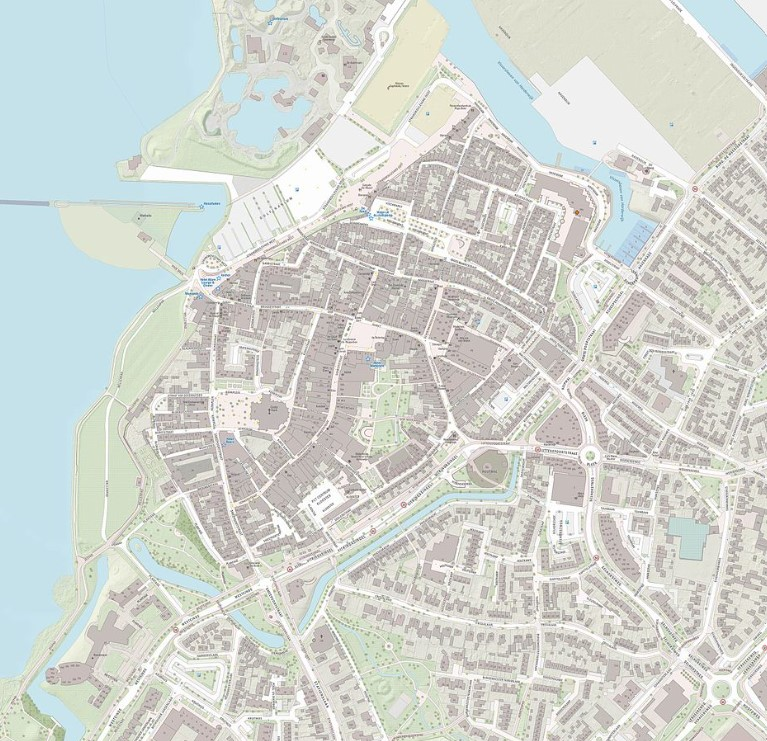
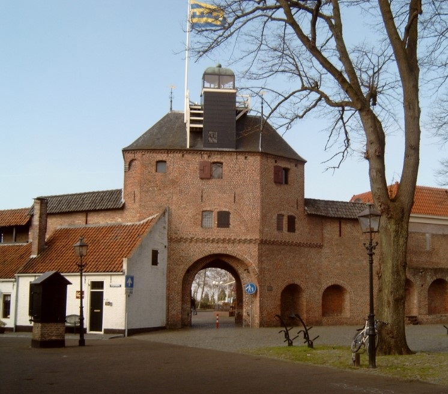

 Over de vroegste geschiedenis van Harderwijk is weinig bekend. Het oudste deel kan de vroonhoeve (curtis) Selhorst (Zelhorst) van het Utrechtse kapittel van Sint Marie zijn geweest. Bij deze nederzetting bevond zich een Sint-Nicolaaskerk. Onbekend is waar deze nederzetting precies lag, mogelijk was dit in de buurt van de Luttekepoort. Over de vroegste geschiedenis van Harderwijk is weinig bekend. Het oudste deel kan de vroonhoeve (curtis) Selhorst (Zelhorst) van het Utrechtse kapittel van Sint Marie zijn geweest. Bij deze nederzetting bevond zich een Sint-Nicolaaskerk. Onbekend is waar deze nederzetting precies lag, mogelijk was dit in de buurt van de Luttekepoort.
 Harderwijk kent veel toerisme, onder meer vanwege het Dolfinarium, stadsstrand, sauna- en welnessresort De Zwaluwhoeve en jachthavens aan het Wolderwijd/Veluwemeer. In het Stadsmuseum zijn talrijke historische voorwerpen en elementen bewaard gebleven van de visserij, het militaire garnizoen, de Gelderse Munt en de universiteit die Harderwijk heeft gehad. Traditiegetrouw wordt het toeristenseizoen geopend in het tweede weekend van juni met de Aaltjesdagen.[8] Een leuke wetenswaardigheid over de Aaltjesdagen is dat de naam niet verwijst naar de aal (paling), maar dat Aaltje de beschermvrouwe van de Harderwijkse vissers was. Tijdens de Aaltjesdagen wordt onder meer een erepenning uitgereikt aan iemand die zich uitzonderlijk voor de stad en het toerisme van Harderwijk heeft ingezet.